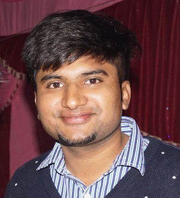

<ion-view view-title="Developer">
    <ion-content>
        <div class="list card">
            <div class="item item-divider"><font color="cyan"><h2>About Me</h2><font color="cyan"></div>
            <div class="item item-body">
                <div>

                    <p></p>
                    
                        <i>Developer:</i>&nbsp;<b>Neeraj Bansal</b></b><br />

                        Game Development" is the technology aspect which brings
                        me in excitement, having passion & dream to develop for "XBOX", I start my journey with "Unity3d
                        But following the vision of never stick to one aspect; I am exploring other streams also like webDev
                        <br />

                        I am currently working on various varied technologies from game development to mobile application
                        development.

                        <i>Hope guys You will love this project. :)</i>
</div>
            </div>
        </div>
    </ion-content>
</ion-view>
